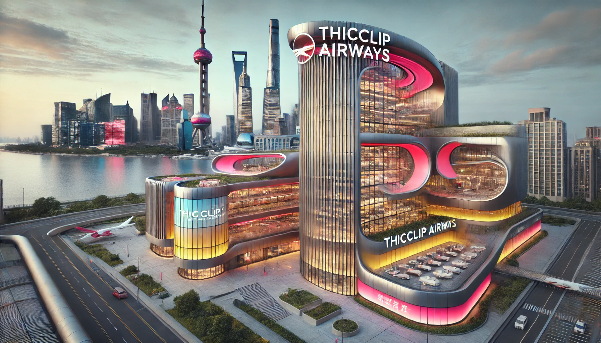

厚嘴唇航空公司是一家由旅居地球的厚嘴唇星人创立的航空公司，总部位于中国上海市。厚嘴唇星位于银河系边缘，其居民因特征性的厚嘴唇而得名。英文名称 "THICCLIP AIRWAYS" 中的 "cc" 灵感源于这一特征，象征从上方俯视时的嘴唇形状。
厚嘴唇航空公司拥有数百架喷气式与螺旋桨飞机，运营全球的观光游览航线；其中，与波音公司定制的 B707o 型飞机最为出名。该型飞机以大胆、活泼、且充满个性的桃红、柠黄、天蓝三色涂装而闻名，这不仅是一种视觉表达，更是厚嘴唇星人性格的象征。厚嘴唇星人作为宇宙中的一支独特群体，他们以乐观、外向且热情的性格著称。正如他们勇于跨越星际来到地球一样，他们喜欢挑战未知，敢于打破常规。
桃红色代表他们的温暖与包容，厚嘴唇星人天生善良友爱，乐于结交不同种族、文化背景的朋友；柠黄色则体现了他们活力四射的创造力和冒险精神，他们总是在寻求新鲜事物，敢于探索新领域，正因如此，他们成为了跨星际航行的先锋；天蓝色则象征着他们对未来的无限憧憬与自由追求，他们始终保持着对星空的仰望和对自由的渴望，希望通过自身的努力，打破时空限制，拉近星球间的距离。
这种特质也反映在厚嘴唇航空公司的服务中，无论是他们的航线设计、机上服务，还是整体氛围，都充满了热情与活力，给乘客带来前所未有的飞行体验，仿佛置身于宇宙探险之旅。同时，这些鲜艳的配色与飞行器设计，不仅是对厚嘴唇星人性格的展示，更传递了他们对地球文化的欣赏和对人类的尊重。
B-707CC 号飞机是厚嘴唇航空公司 B707o 型飞机中最具有纪念意义的一架。其注册号恰好代表了 707 飞机家族和厚嘴唇航空公司 CC。该架飞机正以 CC 7070 的航班号运营上海市到全国各地的旅游航线。很难说这到底是某种巧合或者缘分；总之，厚嘴唇航空公司 B-707CC 号飞机总是受到全球各地飞友的欢迎和追捧。
幸运的是：现在，无需购买一张 CC 7070 航班的机票，你就可以在自己的设备上亲眼看到这架传奇飞机。
请使用 iPhone 或 iPad 的 Safari 浏览器打开该页面以体验增强现实（AR）卡片。不过，你仍然可以
3D 模型需要一定时间加载，具体时间取决于您的网络状况。如果加载不出，请考虑使用代理。推荐使用 Safari、Chrome 或 Edge 等浏览器。